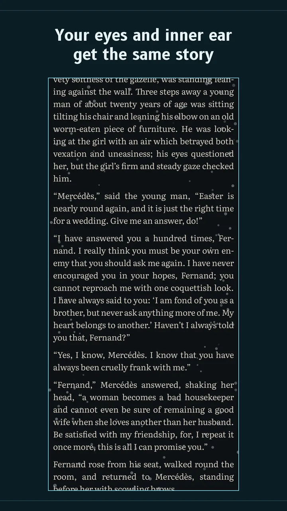
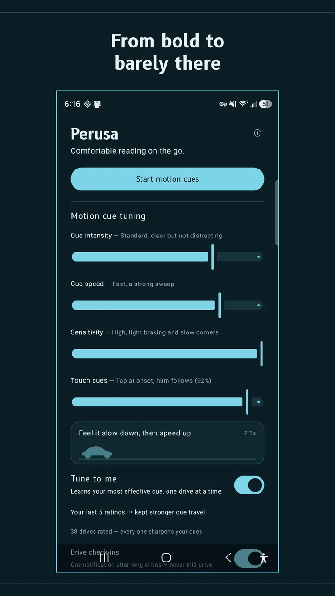
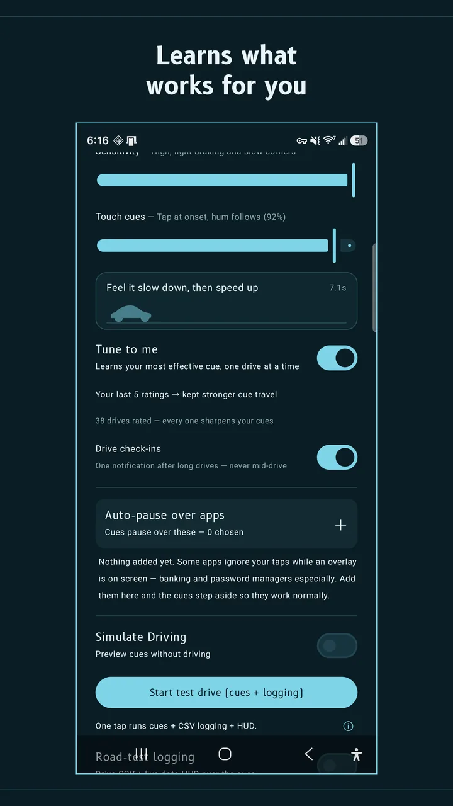
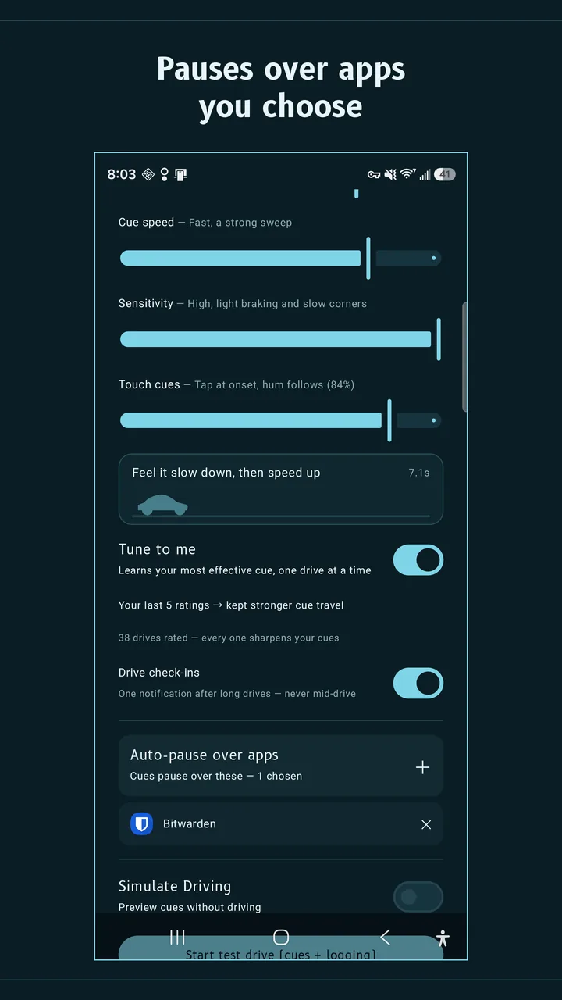

Motion sickness relief for reading your phone in a moving car
Perusa is an Android app for passengers. It draws small motion cue dots around the edges of your screen, over any app. The dots move with the car's real braking, acceleration and turns, so your eyes get the same story as your inner ear. Over potholes and road shake, they stay still.
Launch sale: $1.99 until Oct 3, 2026
Android 8 and up. For passengers only. Perusa is a comfort aid, not a medical device. It does not diagnose, treat, cure or prevent any condition, and results vary from person to person.
Cruising. Dots at rest.
Why the dots stay still
Car sickness comes from slow motion. Potholes are fast.
Motion sickness, car sickness, travel sickness: whatever you call it, the leading explanation is a conflict between your senses. Your inner ear feels the car brake and turn. Your eyes, fixed on a still page, report that nothing is moving. Motion cues give your eyes that missing information in your peripheral vision, outside the text you are reading.
Which motion matters is well measured. The international vibration standard ISO 2631-1 puts the sickness-causing band at 0.1 to 0.5 Hz, the slow sway of braking and cornering. Potholes, expansion joints and a shaking hand sit around 2 to 20 Hz. They rattle the phone, but they are not what makes you ill. Perusa follows the slow band and filters out the rest, so the dots do not jump with the road or your hand. Try the pothole button above with the filter on, then off.
What you get
Built for the ride, not the demo
Still through potholes
A road-shake filter and a vertical road-hit veto keep the dots steady on bad roads. They move only when the car actually moves you.
Learns what works for you
Say yes to Tune to me and Perusa asks how you felt after each drive, with one tap on a notification and never mid-drive. It tries one small change at a time and keeps only what helps. Anything that doesn't is undone automatically.
A tap before the brake
A gentle touch cue lands a moment before a brake or turn builds, so your body is not surprised. Vision matches the motion; touch gets a head start. It is on at a low level by default and can be turned off.
Over any app
E-books, your browser, messages, video, games. Taps pass straight through the overlay. Cues start when the car does, stay up at stop lights, and stand down when the drive ends. Auto-pause hides them over apps you choose, such as banking.
Pay once, private by design
No subscription, no ads, no account, no trackers. Perusa reads speed to know you are riding. Your location is never stored and never leaves the phone. Sharing anonymous drive summaries is optional and asked once. Privacy policy.




Compare
Perusa and the built-in options
Both phone platforms now ship their own motion cues. If your phone has one, try it first: it is free. Perusa is for Android phones that cannot get the built-in feature, and for riders who want cues that ignore rough roads and adapt to them.
| Perusa | Motion Assist (Google) | Vehicle Motion Cues (Apple) | |
|---|---|---|---|
| Works on | Android 8 and up | Android 17 on Pixel and recent Galaxy phones | iPhone and iPad, iOS 18 and up |
| Cost | $4.99 once | Free, built in | Free, built in |
| Holds still over potholes | Yes, by design (0.1–0.5 Hz band only) | Not yet tested by us | Not yet tested by us |
| Adapts to you | Yes, from your post-drive ratings | Appearance settings | Appearance settings |
| Touch cue before a brake or turn | Yes, adjustable | Not offered | Not offered |
| Starts by itself in a vehicle | Yes | Yes | Yes |
| Ads, account or tracking | None | None | None |
Checked September 19, 2026 against 9to5Google and Android Authority on Motion Assist, and Apple's announcement of Vehicle Motion Cues. We only claim what we have measured. Corrections are welcome at the address below.
Questions
Straight answers
Does Android have a motion sickness setting?
Yes, on the newest phones. Google's Motion Assist arrived with Android 17 on Pixel phones and on Galaxy phones running One UI 9. Look for a Motion Assist tile in Quick Settings, or search Settings for it. If you have it, try it first. If your phone runs Android 16 or older, it cannot get Motion Assist, and that is where Perusa comes in. See what older Android phones can do.
Can I get the iPhone motion sickness dots on Android?
Apple's dots are a feature called Vehicle Motion Cues and only run on iPhone and iPad. On Android the equivalents are Motion Assist on Android 17, and apps such as Perusa, which works on Android 8 and up.
How is Perusa different from free motion cue apps like KineStop?
There are good free apps, and you should try them. Perusa differs in three ways we can stand behind: it filters out road shake so the dots hold still over potholes, it tunes itself from how you felt after each drive, and it adds a touch cue just before a brake or turn. It also has no ads and no subscription. We have not run a controlled comparison against other apps, so we will not claim theirs are worse.
Does it work on buses, trains, boats or planes?
Perusa is built and tested in cars, including taxis and rideshares, and it is designed for road vehicles such as buses. We have not tested trains, boats or planes, so we do not claim them.
Can I use it while driving?
No. Perusa is for passengers only, and it asks you to confirm you are a passenger before every ride.
Is Perusa a medical device?
No. It is a comfort aid. It does not diagnose, treat, cure or prevent any condition, and it may not help everyone. If you have severe or persistent motion sickness, nausea or dizziness, talk to a doctor.
What does it collect?
Nothing unless you say yes. Location is used on the phone for speed and heading only; it is never stored and never sent. If you opt in, Perusa shares anonymous drive summaries and crash reports to improve the cues. Details are in the privacy policy.
Can I try it before a drive, and can I get a refund?
Simulate Driving previews the cues from your couch. Google Play also lets you request a refund within 48 hours of purchase.
Who makes it
Made by one independent developer
Perusa is made by Elliott Jempty. The cue engine was tuned on recorded real-world drives, not a simulator. Questions, corrections and press: elliottjempty@gmail.com.